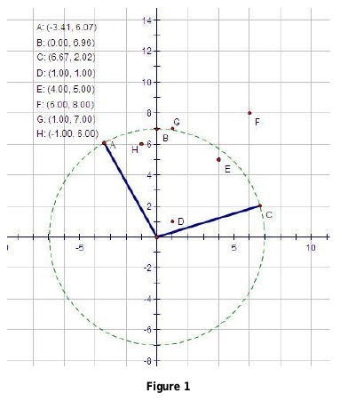
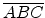

A new mighty weapon has just been developed, which is so powerful that it can attack a sector of indefinite size, as long as the center of the circle containing the sector is the location of the weapon. We are interested in developing a fire-control system that calculates firing-solutions automatically.
The following example gives an example of a firing solution:

Here the firing region is the sector

that covers six points: A, B, C, D, E, H.
You may further assume that the weapon is always located at point (0, 0), no targets will be on the point (0, 0) and the coordinates of the targets will be distinct.
A firing solution is called effective if and only if it covers a minimum of K
points out of N
given points (targets) on the two-dimensional Cartesian plane. Furthermore, since the cost of a particular fire solution is in direct proportion to the size of the area it covers, a firing could be quite costly; thus we are only interested in the optimal firing solution with the minimum cost.
There are multiple test cases in the input file.
Each test case starts with two non-negative integers, N
and K
(1 N5000, KN)
, followed by N
lines each containing two integers, X
, and Y
, describing the distinct location of one target. It is guaranteed that the absolute value of any integer does not exceed 1000.
N5000, KN)
, followed by N
lines each containing two integers, X
, and Y
, describing the distinct location of one target. It is guaranteed that the absolute value of any integer does not exceed 1000.
Two successive test cases are separated by a blank line. A case with N = 0
and K = 0
indicates the end of the input file, and should not be processed by your program.
For each test case, please print the required size (to two decimal places), in the format as indicated in the sample output.
3 1
0 1
1 0
-5 -6
3 2
0 2
2 0
-5 -6
0 0
Case #1: 0.00
Case #2: 3.14